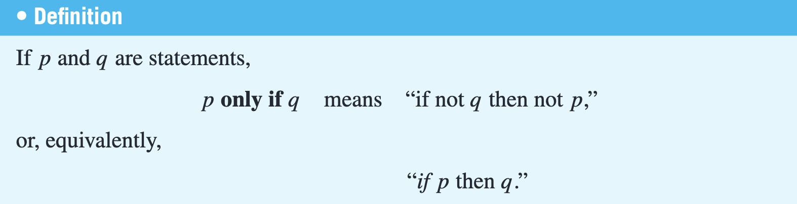
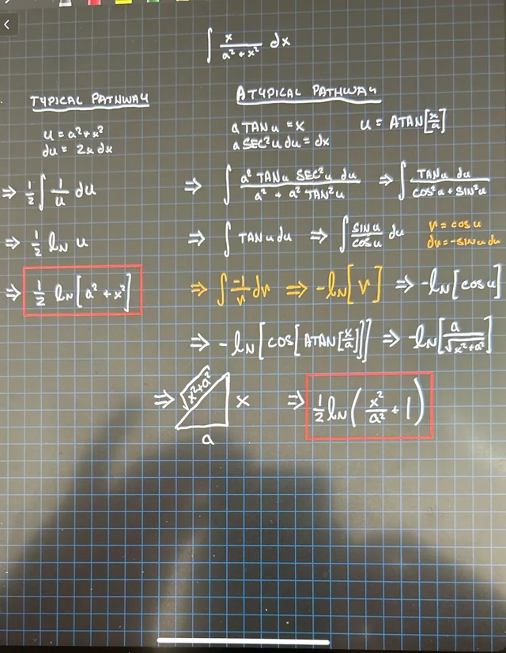
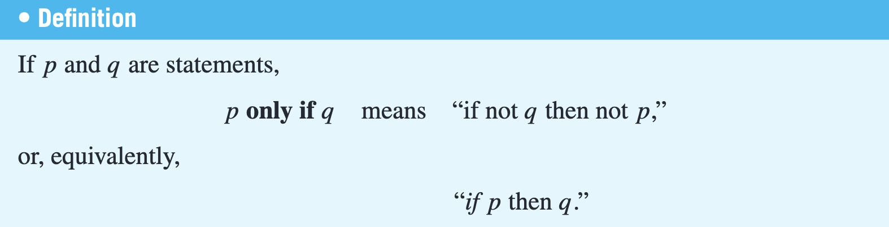
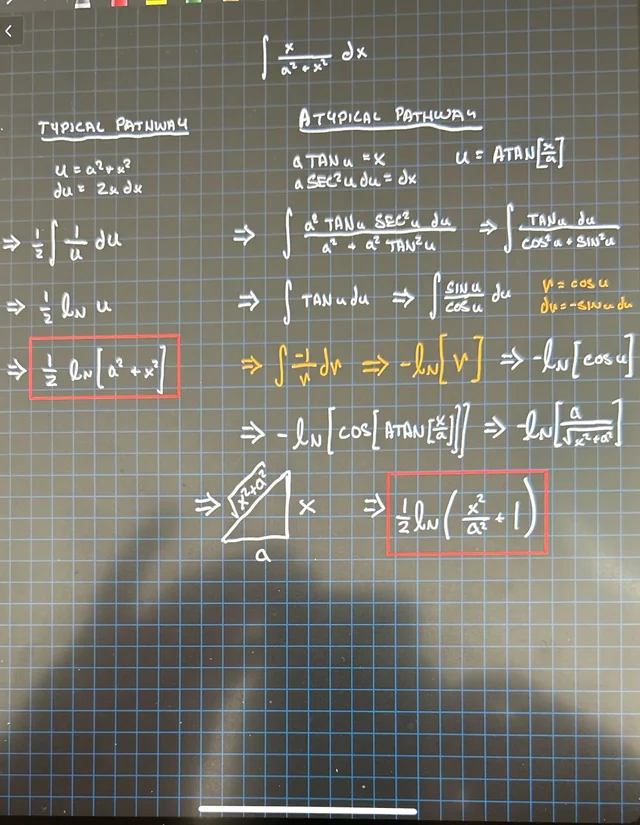

| De Morgan's : |
If x is a particular real number, saying that x is not less than 2 (x ≮ 2) means that x
does not lie to the left of 2 on the number line.
This is equivalent to saying that either
x = 2 or x lies to the right of 2 on the number line (x = 2 or x > 2).
Hence, x ≮ 2 is equivalent to x ≥ 2.
Pictorially,
–2 –1 0 1 2 3 4 5
If x � 2, then x lies in here.
Similarly,
x ≯ 2 is equivalent to x ≤ 2,
x � 2 is equivalent to x > 2, and
x � 2 is equivalent to x < 2.
Example 2.1.10 Inequalities and De Morgan’s Laws
Use De Morgan’s laws to write the negation of −1 < x ≤ 4.
Solution The given statement is equivalent to
−1 < x and x ≤ 4.
By De Morgan’s laws, the negation is
−1 ≮ x or x � 4,
which is equivalent to
−1 ≥ x or x > 4.
|
 


